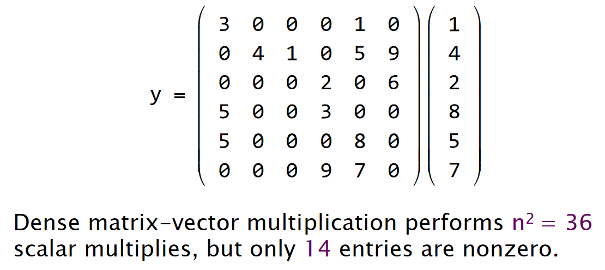

DATA STRUCTURES
Packing and Encoding
The idea of packing is to store more than one data value in a machine word. The related idea of encoding is to convert data values into a representation requiring fewer bits.
Example
Encoding dates
- The string “September 11, 2018” can be stored in 18 bytes — more than two double (64-bit) words which must moved whenever a date is manipulated.
Idea
- Assuming that we only store years between 4096 B.C.E. and 4096 C.E., there are about 365.25 × 8192 ≈ 3 M dates, which can be encoded in ⎡lg(3×106)⎤ = 22 bits, easily fitting in a single (32-bit) word.
But determining the month of a date takes more work than with the string representation.
Instead，pack the three fields into a word
typedef struct{ int year: 13; int month: 4; int day: 5; } date_t;
This packed representation still only takes 22 bits(Actually this will pack the struct a little bit at the end), but the individual fields can be extracted much more quickly than if we had encoded the 3 M dates as sequential integers
Sometimes unpacking and decoding are the optimization, depending on whether more work is involved moving the data or operating on it.
Augmentation
The idea of data-structure augmentation is to add information to a data structure to make common operations do less work.
- Appending singly linked lists
Precomputation
The idea of precomputation is to perform calculations in advance so as to avoid doing them at “missioncritical” times.
Example
Binomial coefficients 【Latex 公式！！！！！！！！！】
- Computing the “choose” function by implementing this formula can be expensive (lots of multiplications)
- Watch out for integer overflow for even modest values of n and k.
Idea
Precompute the table of coefficients when initializing, and perform table look-up at runtime.
- Pascal’s Triangle
- vertical axis - n
- horizontal axis - k

Compile-Time Initialization
The idea of compile-time initialization is to store the values of constants during compilation, saving work at execution time.
Idea
Create large static tables by metaprogramming.（easier in Python）
Caching
The idea of caching is to store results that have been accessed recently so that the program need not compute them again.
- 可以做大一点的 cache，这样搜索 cache 耗时会增加，但也可以节省运行时间
- 可以在软件上实现而不依靠硬件的 cache 来做
Sparsity
The idea of exploiting sparsity is to avoid storing and computing on zeroes. “Thefastestwaytocomputeis nottocomputeatall.”
Example
Matrix-vector multiplication

Idea
Compressed Sparse Row (稀疏矩阵的主要存储格式之一)
LOGIC
Constant Folding and Propagation
The idea of constant folding and propagation is to evaluate constant expressions and substitute the result into further expressions, all during compilation.

With a sufficiently high optimization level, all the expressions are evaluated at compile-time.
Common-Subexpression Elimination
The idea of common-subexpression elimination is to avoid computing the same expression multiple times by evaluating the expression once and storing the result for later use.

Algebraic Identities
The idea of exploiting algebraic identities is to replace expensive algebraic expressions with algebraic equivalents that require less work.
Short-Circuiting
When performing a series of tests, the idea of shortcircuiting is to stop evaluating as soon as you know the answer.
&& ||
Ordering Tests
Consider code that executes a sequence of logical tests. The idea of ordering tests is to perform those that are more often “successful” — a particular alternative is selected by the test — before tests that are rarely successful. Similarly, inexpensive tests should precede expensive ones.
Creating a Fast Path
Combining Tests
The idea of combining tests is to replace a sequence of tests with one test or switch.
Switch
LOOPS
Hoisting 循环不变代码外移
The goal of hoisting — also called loop-invariant code motion — is to avoid recomputing loop-invariant code each time through the body of a loop.
Sentinels 简化循环边界条件
Sentinels are special dummy values placed in a data structure to simplify the logic of boundary conditions, and in particular, the handling of loop-exit tests.
Loop Unrolling 循环展开
Loop unrolling attempts to save work by combining several consecutive iterations of a loop into a single iteration, thereby reducing the total number of iterations of the loop and, consequently, the number of times that the instructions that control the loop must be executed.
- Full loop unrolling: All iterations are unrolled.
- Partial loop unrolling: Several, but not all, of the iterations are unrolled.
Loop Fusion 循环合并
The idea of loop fusion — also called jamming — is to combine multiple loops over the same index range into a single loop body, thereby saving the overhead of loop control.
Eliminating Wasted Iterations 消除浪费的迭代
The idea of eliminating wasted iterations is to modify loop bounds to avoid executing loop iterations over essentially empty loop bodies.
FUNCTIONS
Inlining
The idea of inlining is to avoid the overhead of a function call by replacing a call to the function with the body of the function itself.
- 直接写入函数
- static inline 内联函数
Tail-Recursion Elimination 尾调用优化
The idea of tail-recursion elimination is to replace a recursive call that occurs as the last step of a function with a branch, saving function-call overhead.
Coarsening Recursion 粗化递归
The idea of coarsening recursion is to increase the size of the base case and handle it with more efficient code that avoids function-call overhead.
Chapgpt 对粗化递归的一个例子
粗化递归是一种优化技术，它通过减少递归调用的次数来提高运行速度。这通常是通过在每次递归调用之间执行更多的工作来实现的。
例如，考虑一个用于计算阶乘的简单递归函数： def factorial(n): if n == 1: return 1 else: return n * factorial(n - 1)
这个函数每次递归调用都会执行一次乘法运算。我们可以对它进行粗化递归优化，使其在每次递归调用之间执行多次乘法运算，从而减少递归调用的次数：
def factorial(n):
result = 1
while n > 1:
result *= n
n -= 1
return result
这个优化后的函数只会执行一次递归调用，因此它的运行速度会快得多。
当然，粗化递归并不是每个情况下都能使用的，它只适用于一些特定的问题。但是，当适用时，它可以显著提高运行速度。
Closing Advice
- Avoid premature optimization. First get correct working code. Then optimize, preserving correctness by regression testing.
- Reducing the work of a program does not necessarily decrease its running time, but it is a good heuristic.
- The compiler automates many low-level optimizations.
- To tell if the compiler is actually performing a particular optimization, look at the assembly code.
英语词汇笔记
| 单词 | 解释 |
|---|---|
| excuse | 执行（代码） |
| Algorithm | 算法 |
| DATA STRUCTURES | 数据结构 |
| encode | 编码 |
| manipulate | 操作 |
| Augmentation | 增强 |
| Precomputation | 预计算 |
| Binomial coefficients | 二项分布 系数 |
| implemente | 执行（公式） |
| formula | 公式 |
| perform | 执行（操作） |
| compile | 编译 |
| metaprogramming | 元编程 |
| Sparsity | 稀疏的 |
| Constant Folding | 常数折叠（编译器优化的一种技术） |
| Constant Propagation | 常数传播（编译器优化的一种技术） |
| optimization | 最优化 |
| common-subexpression | 公因子表达式 |
| elimination | 剔除 |
| Algebraic Identities | 代数恒等式 |
| iteration | 迭代 |
| Recursion | 递归 |
| heuristic | （计算机程序或教育中的）启发式方法 |
| assembly code | 汇编代码 |